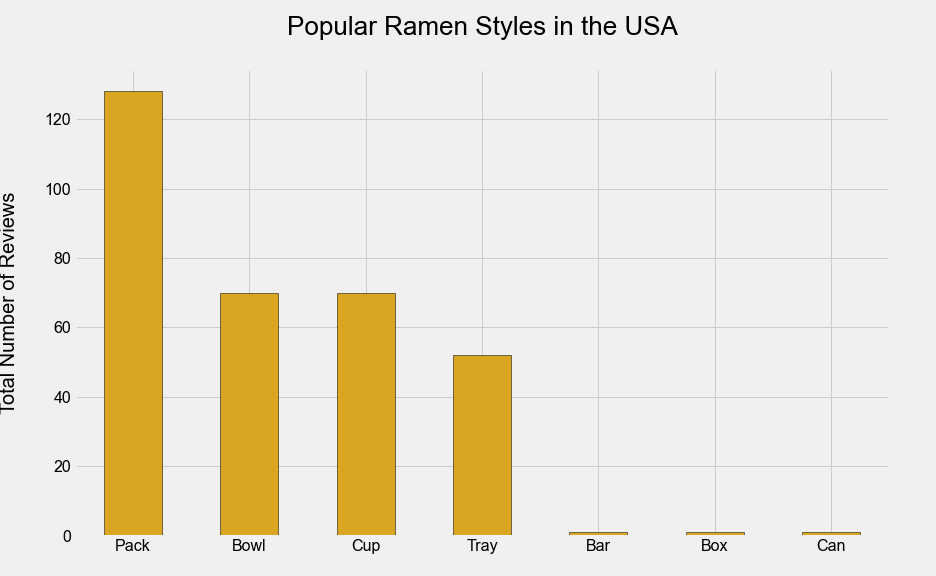

Most Reviews by Country:

My focus for this project now turned to the United States. I now wished to find out what types and brands of ramen were amongst the most popular in my home country. I began by creating a new data frame that contained all the columms from the orginal dataframe but filtered by the United states. I then grouped this dataframe by variety (or type of ramen) into a new dataframe inorder to visualize the outcome. What I found was that of the 7 varieties reviewed, Pack was by far the most reivewed and popular in the United States. It was followed by moderate reviews of bowls, cups and tray varieties. Varieties like bar, box and tray had very little reviews which would infer that these varieties are rarely consumed in the United States. Future plans for this website would include comparisons to other countries to see if these bottom varieties had any popularity in other countries.